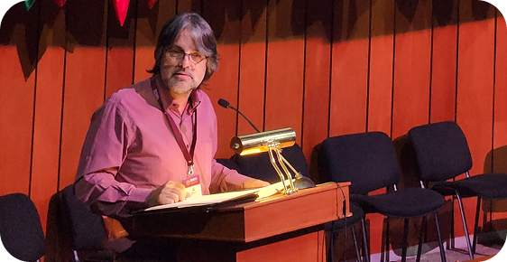

Congreso Día 1
Inauguración

Conferencia Dr. Carlos Montaño

Mesa: Rutas para el bienestar
Mesa: Formación de cuadros y participación ciudadana: ejes articuladores del Estado de Bienestar

Mesa: La mujer como agente transformador en el Estado de Bienestar
Conferencia Dra. Graciela Rosso
Congreso Día 2
Inauguración
Conferencia Dr. Carlos Montaño
Mesa: Rutas para el bienestar